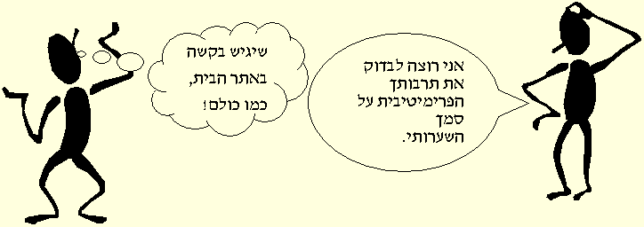

?מהי חשיבה
?האם היא אמצעי לחקירה, ארגון, הבהרה
?האם היא כלי לפתרון בעיות
?האם היא מילה נרדפת להגיון
?(האם היא מילה נרדפת לאי ודאות (אני חושב שאני אוהב אותך
(האם היא מלה נרדפת להשערה או לתקוה? (אני חושב שהפועל תנצח
(האם היא מלה נרדפת לזכרון?(אני חושב לאחרונה הרבה על אבי שנפטר
(!האם היא היפוכה של בהייה באויר? (תפסיק לחלום ותתחיל לחשוב
(!האם היא מלה נרדפת להקשבה? (תחשוב על מה שאמרתי לך
(!האם היא מלה נרדפת לרגישות והתחשבות? (למה אתה אף פעם לא חושב על אחרים
?האם היא כלי לפתרון בעיות
?האם היא מילה נרדפת להגיון
?(האם היא מילה נרדפת לאי ודאות (אני חושב שאני אוהב אותך
(האם היא מלה נרדפת להשערה או לתקוה? (אני חושב שהפועל תנצח
(האם היא מלה נרדפת לזכרון?(אני חושב לאחרונה הרבה על אבי שנפטר
(!האם היא היפוכה של בהייה באויר? (תפסיק לחלום ותתחיל לחשוב
(!האם היא מלה נרדפת להקשבה? (תחשוב על מה שאמרתי לך
(!האם היא מלה נרדפת לרגישות והתחשבות? (למה אתה אף פעם לא חושב על אחרים
,בדרך כלל אנו מוכללים תחת כותרת ה"חשיבה" מושגים כמו: פתרון בעיות, המשגה
הכללה, שיפוט והערכה. התייחסות למושגים כחשיבה רב כיוונית או חד כיוונית מנסים
.לתאר את הקף התהליכים והתוצרים המתבצעים בזמן חשיבה
(בספרו "החשיבה כתפקוד תלת כווני" מביא גלנץ ניסוי לבדיקת החשיבה ( ההגיון
.בהגדרת מושג
.כל הצורות בטור שמאל הם "<a/>דנים<"a href="dan.html>". מצאי מהם ה"דנים" בטור ימין
.לצורך הפתרון מתבצעת אינדוקציה בטור שמאל לזיהוי הכלל
.בטור ימין נעשית פעילות של דדוקציה, בחירת מראים על סמך הכלל
.לבדיקה נערכת אנלוגיה (השוואה),לבדיקה, שיפוט והערכה
.אינדוקציה , דדוקציה ואנלוגיה נתפסים כרכיבים עקריים בחשיבה לוגית
תהליכים נוספים המעורבים באספקטים לוגיים ומילוליים הם הסקת מסקנות, הכללה
.והשערת השערות
על פי הטקסונומיה של בלום קיימת היררכיה ביעדים החינוכיים המובילים לקראת
חשיבה. הדף המצורף והעיון בספרו של אברהם כהן, מכוונים לקראת תכנון שיעורים
לכיתות הטרוגניות ברוח מיומנויות חשיבה "קלאסיות". ממומלץ להעזר בכתובים אלו
.לבניית מערכי שיעור מושכלים
כיום, בעידן התקשוב, גלישה ברשת תהליכי חשיבה ושיח המבוססים על תהליכים
סמיוטיים, מכוונים לקראת אבדוקציה כרכיב חשיבה. לקריאה נוספת על מושג חדש
:זה גלשו באתר

מיומנויות קוגניטיביות
,הבה נניח, שחשיבה מוגדרת כמכלול התהליכים המוחיים הקשורים בקליטת מידע
,עיבודו ואופני ביטויו. תהליכי החשיבה מתבססים על מיומנויות קוגניטיביות חיוניות
.כמו: תפיסה, ריכוז, מיקוד, קשב, מיון, תכנון, המשגה, הסמלה
לדוגמאות העוסקות במיומנויות חשיבה, בדקו את "תכנית המסגרת לגן הילדים" ואת
"תכנית מסגרת לילדים מתקשים בגיל הרך"

אתר לבחינת כשוריים קוגניטיביים של קשב ואינטליגנציה לוגית
התיאוריה הקוגניטיבית ההתפתחותית
התיאוריה של ז'אן פיאז'ה עוסקת בקשר שבין דרכי החשיבה של הפרט המתפתחות
באופן הדרגתי לבין ההתנסות שלו בסביבתו. תהליכי החשיבה והמיומנויות
הקוגניביות קשורים זה בזה. האינטליגנציה מתפתחת באופן הדרגתי, בשלבים
.התפתחותיים המשותפים לכלל בני אנוש
מעבר משלב לשלב דורש התנסות ו"הבשלה" משלב ההתפתחות הקודם. ההבחנה בין
יכולות שונות של ילדים באה לידי ביטוי במהירות בה הם עובדים משלב לשלב ועל ידי
- יעילות תהליך החשיבה בכל שלב. עוד על התיאוריה של פיאז'ה וישומיה בהוראה
.ביחידת הלימוד העוסקת בנושא
Sari Bar On 1999 - All Rights Reserved
התיאוריה של ז'אן פיאז'ה עוסקת בקשר שבין דרכי החשיבה של הפרט המתפתחות
באופן הדרגתי לבין ההתנסות שלו בסביבתו. תהליכי החשיבה והמיומנויות
הקוגניביות קשורים זה בזה. האינטליגנציה מתפתחת באופן הדרגתי, בשלבים
.התפתחותיים המשותפים לכלל בני אנוש
מעבר משלב לשלב דורש התנסות ו"הבשלה" משלב ההתפתחות הקודם. ההבחנה בין
יכולות שונות של ילדים באה לידי ביטוי במהירות בה הם עובדים משלב לשלב ועל ידי
- יעילות תהליך החשיבה בכל שלב. עוד על התיאוריה של פיאז'ה וישומיה בהוראה
.ביחידת הלימוד העוסקת בנושא